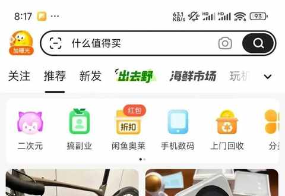
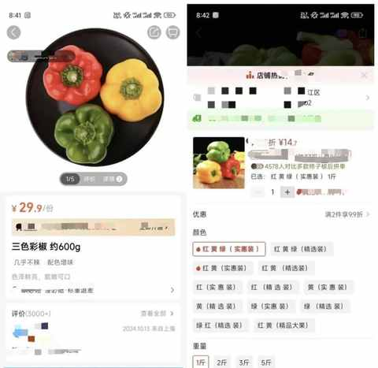
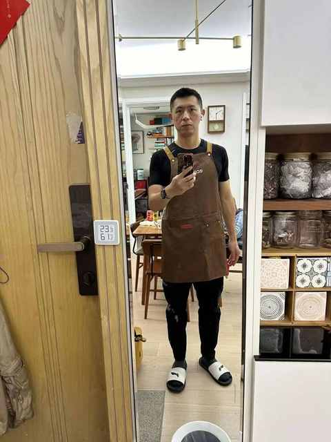
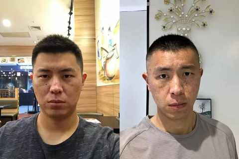

一个普通中年男人总结的 5 个省省 tips
随着年龄的增长，冲动消费的情况越来越少，大部分时候也能更理性地评估是否要买某一个东西。
与外部环境相关，与内心想法更契合的该省省该花花的消费理念自然而然的形成，进而在实践中不断内化。
下面分享的 5 个 tips 都很适合实操，只要坚持就等于是赚了！
一、使用海鲜市场
两年前才开始用，比较早的时候会觉得沟通成本高以及不确定性大，使用方式主要是把当时不需要的东西出掉，整个过程比想象中顺利很多，而且大家都很有礼貌。
在使用过一段时间之后，尝试买东西，发现 海鲜市场 的规则很完善已经能很大程度上规避各种问题。
大部分卖家和买家对讲价的态度都很 open，只要礼貌且诚意的沟通，即使不成交也不会让双方产生不好的情绪。
卖出过：
显示器、键盘、鼠标、儿童自行车、iPhone、手机壳、耳机、数据线、显卡、鞋子等等。
买到过：
手机、手机壳、机械键盘、键盘、键帽、表带、自行车配件、山地车等等。
越用越好用，算法和某宝类似，使用一段时间之后会推荐你可能需要的各类物品。

二、在某多买农副产品
不仅有砍一刀，还有助农计划。
助农计划让很多农户可以在原产地直接发货，购买过多次，品质都不错。
以下用三色彩椒的价格作为参考：

三、拥抱电子书
采用电子书作为主要阅读的方式能更快 地利用日常的碎片化时间，从而 养成阅读习惯，也能更快的检索信息与做相关笔记与摘录。
当看完 170 本书之后，阅读成为习惯
强烈推荐微信读书作为阅读电子书的主力 APP。
all in 微信读书 8 个月之后，想分享这 6 个纯主观使用技巧
几乎你能想到的图书的电子版，都能在z-libray找到，如果出现网址不能访问的情况，在小某书检索下就能找到最新可访问的链接。
四、在家做饭
一个实用的围裙少不了，例如现在用的这款是在董宇辉直播间买的，前面有两个口袋，穿脱方便且耐脏。

在家做饭好处有许多：省、吃得健康、熟悉各种食材、精进厨艺等等。
诚然这些行为会带来时间上的投入，但相对产出来说，这些时间花的很值。因为 很大概率这些没有用来买菜做饭的时间，在等外卖的时候也是被用来刷手机。
五、锻炼身体
身体是本钱，必须好好维护。
除了日常饮食要注意营养均衡，最最重要的是通过运动去锻炼身体。
普通人一年的跑步实践，完成 51 次 10km 后的 5 点感悟
别再说跑步伤膝盖了，这 6 本书运动健康方面的书籍，一定都看看！！！
跑步 or 骑行：一年有氧运动的个人体验与建议
生活日常之：把运动融入其中
燃脂效率比拼：9种运动一年的热量消耗分析

一年多的实践，得出来的结论：运动是中年男人最好的医美！